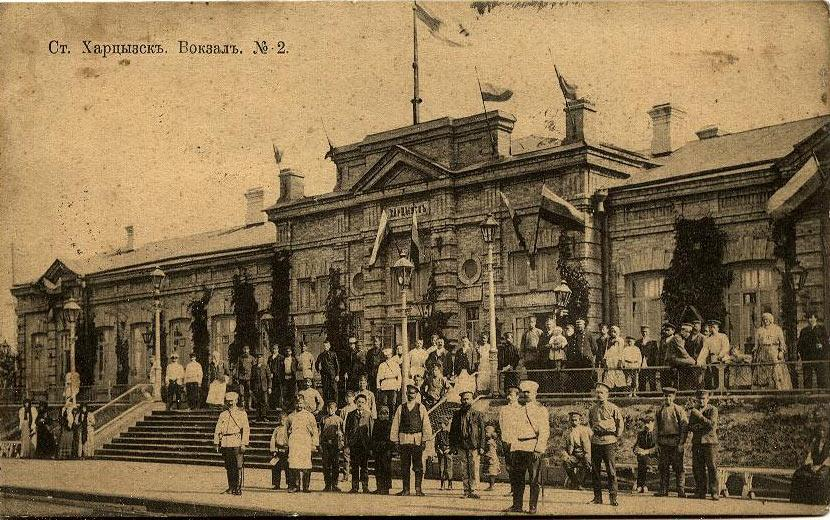

Железная дорога дала жизнь пристанционному посёлку. Промышленность, война и послевоенное восстановление сформировали его характер.

Станция Харцызская стала точкой отсчёта городской истории.
С чего всё началось
Станция в степи
В 1869 году на Курско-Харьковско-Азовской железной дороге появилась станция Харцызская. Рядом постепенно вырос пристанционный посёлок, а развитие железнодорожного сообщения привлекало жителей и предприятия.
Позднее Харцызск стал промышленным центром, известным прежде всего производством труб и стальных канатов.
«История города — это не только даты, но и труд людей, которые его строили».
Хронология
Десять поворотных дат
Краткая летопись города и края
Значимые события в истории Харцызска
Дата
Событие
Значение
Открытие станции Харцызская
Железнодорожная станция становится основой будущего города.
Строительство котельно-механического завода
Начало формирования машиностроительной специализации.
Предприятие становится трубным заводом
В городе закрепляется трубное производство.
Харцызск — центр Зуевского горного района
Посёлок получает более заметную административную роль.
Зуевская ГРЭС даёт первый ток
Энергия электростанции поддерживает промышленное развитие региона.
Харцызск получает статус города
Официальное признание выросшего промышленного центра.
Начало оккупации в годы войны
Тяжёлый период для жителей; предприятия эвакуируют.
Освобождение Харцызского района
Начало возвращения к мирной жизни и восстановлению.
Возобновляется работа трубного завода
Предприятие восстанавливают после разрушений.
Полноценно работает сталепроволочно-канатный завод
Развивается производство стального каната.
Запускается троллейбусное движение
Новый вид городского общественного транспорта.
Открывается Парк поколений
В городской среде появляется новое общественное пространство.
Откуда взяты исторические сведения
Хронология составлена по материалам «Летописи Донбасса» и справочной статье о Харцызске. Некоторые даты и формулировки требуют сверки с местным музеем.